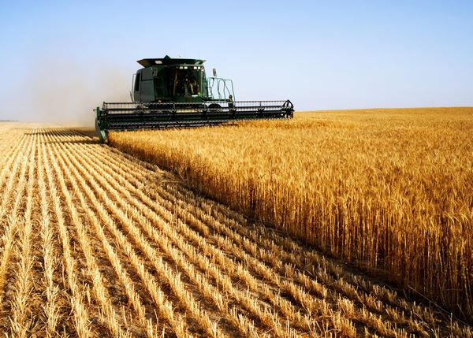

O nama
Porodična priča i znanje iz prakse
Agro Marinković je zamišljen kao sajt lokalne poljoprivredne apoteke koja pruža podršku poljoprivrednicima, baštovanima i manjim gazdinstvima.
Osnovna ideja sajta je da kupac brzo pronađe proizvode koji su mu potrebni, pročita najvažnije informacije i kontaktira apoteku radi dodatnog saveta.
- prodaja semena i sadnog materijala
- prodaja đubriva i sredstava za zaštitu bilja
- osnovna oprema za baštu i gazdinstvo
- savetovanje pri izboru proizvoda

Voćnjak
Voćnjak porodice Marinković predstavlja spoj porodične tradicije, pažljivog rada i ljubavi prema prirodi. U njemu se neguju voćke kroz svaku sezonu, od rezidbe i zaštite do berbe zrelih plodova. Posebna pažnja posvećuje se kvalitetu, zdravlju biljaka i očuvanju zemljišta, kako bi svaki rod bio što bolji i prirodniji.
Žetva pšenice
Žetva pšenice predstavlja završnu fazu proizvodnje, kada se zrelo klasje skida sa njive i zrno odvaja od stabljike. Obavlja se kada pšenica dostigne odgovarajuću zrelost i kada vremenski uslovi omogućavaju sigurno i kvalitetno prikupljanje roda. Pravilno obavljena žetva smanjuje gubitke, čuva kvalitet zrna i omogućava bolju pripremu za skladištenje ili dalju prodaju.
